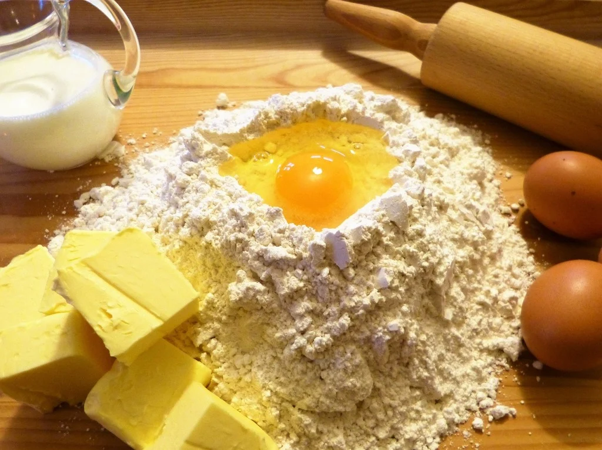
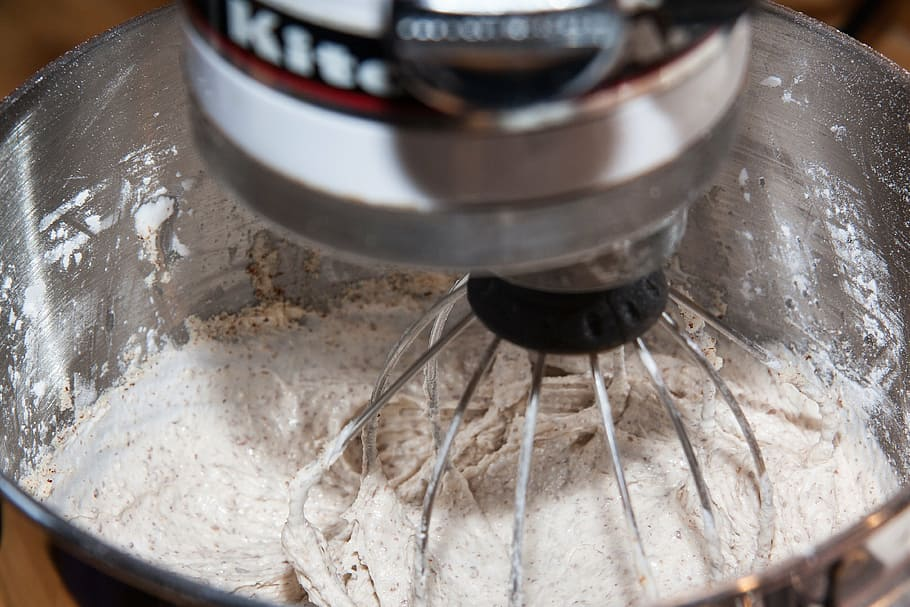
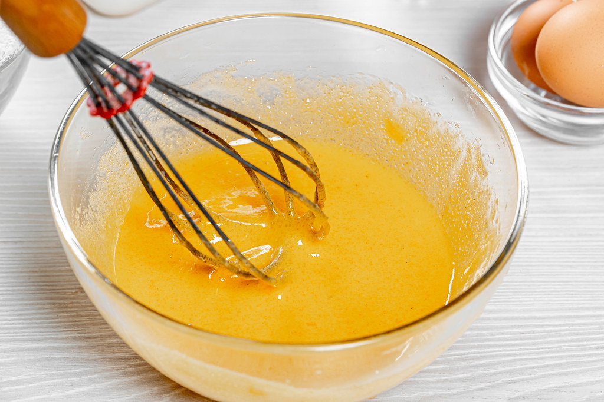
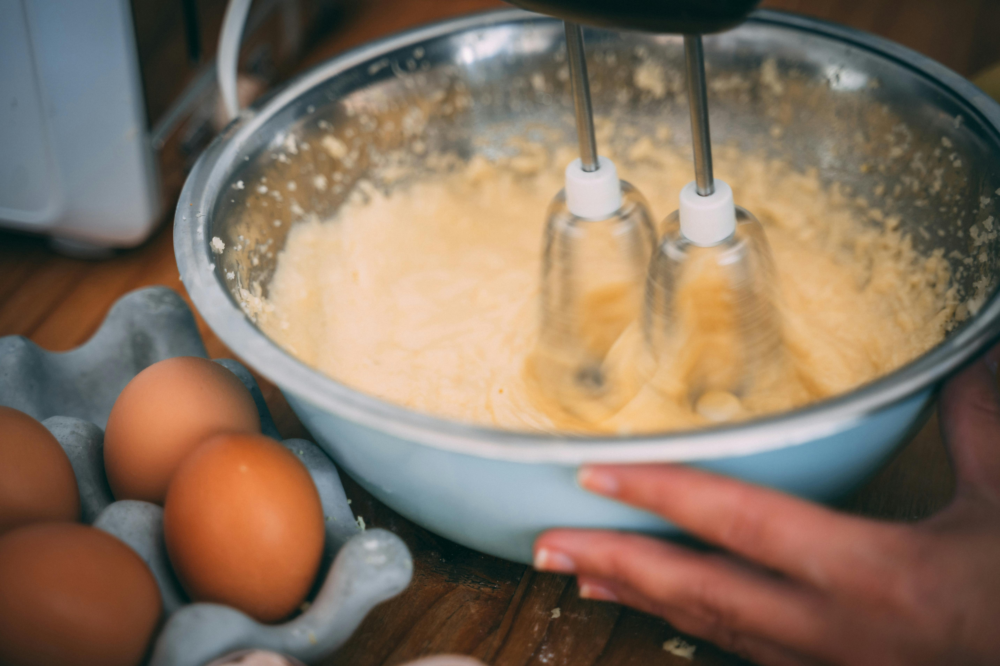
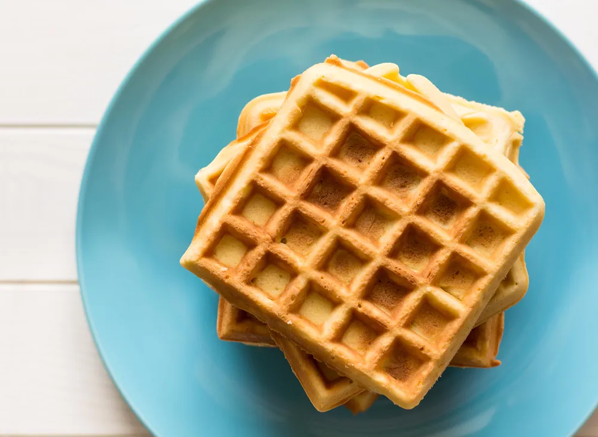
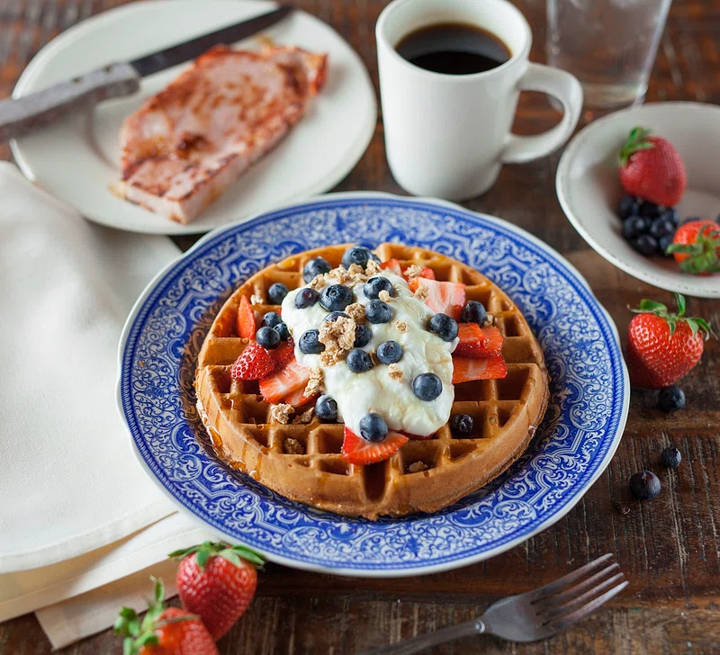

Mix flour, salt, baking powder, and sugar together in a large bowl; set aside.
Preheat waffle iron to desired temperature.







With just basic pantry staples like flour, eggs, and milk, these waffles require very little prep and are perfect for any day of the week.
Home cooks of all levels praise this simple method for creating fluffy, crisp waffles every single time! Follow this recipe and your warm, sweet waffles will be crunchy on the outside and soft on the inside.

Mix flour, salt, baking powder, and sugar together in a large bowl; set aside.
Preheat waffle iron to desired temperature.




